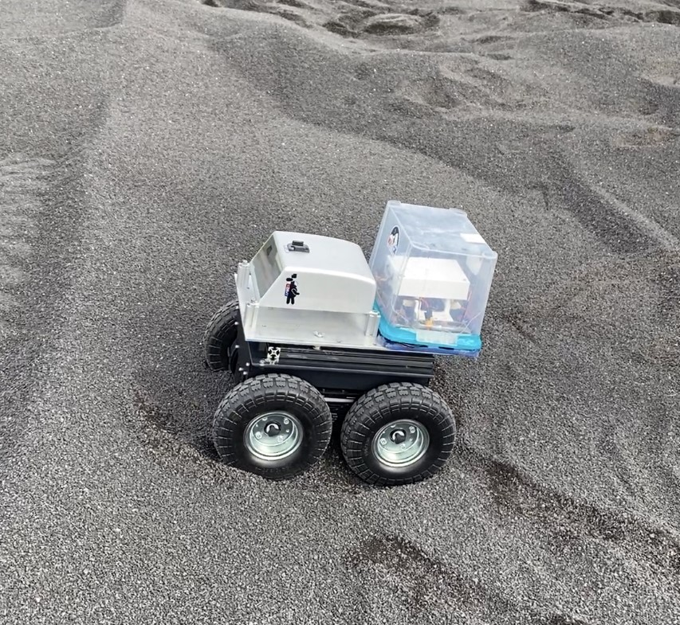

This is a very early draft of my personal portfolio.
While it's quite rough, I still wanted a visual aid for the projects listed on my resume.
This site is my first foray into web design, so massive changes/improvements will come.
However, I am currently enrolled full-time as well as working a full-time internship,
which leaves little room for personal projects.
Autonomous Rover for Lunar Terrain Navigation
NASA Marshall Space Flight Center
3D terrain mapping in Lunar Terrain FieldBuilding a hazard map using LiDAR.GPS-denied pathfinding and autonomous navigation.

Rover in lunar terrain field.
The goal of this project is to perform GPS-denied navigation and terrain mapping,
demonstrating applications for the Moon and Mars.
This rover is equipped with a Frequency-Modulated Continuous Wave (FMCW) LiDAR
scanner, which has the ability to determine its position and velocity solely by
referencing its immediate surroundings.
The application is based on Robot Operating System and its Navigation 2 library, both open-source.
Navigation 2 was originally developed for use in structured environments such as warehouses
and hospitals.
Thus, this project pushes the boundaries of Navigation 2 due to our focus on unstructured environments
and uneven terrain.
Machine Vision
University of North Carolina Wilmington
Detecting object in camera frame.Modeling object via camera depth information.Robot arm using data to manipulate object.
This was an introductory robotics course taught at UNCW. I took the inaugural offering of the course.
The project goal was to detect an object in 3D space and have a robot manipulator arm
move said object.
The bulk of programming was done in Python within the Robot Operating System framework.
This course served as an introduction to Robot Operating System, Linux, and Docker.